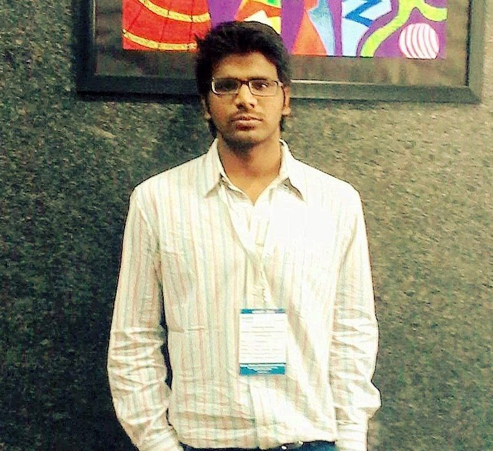
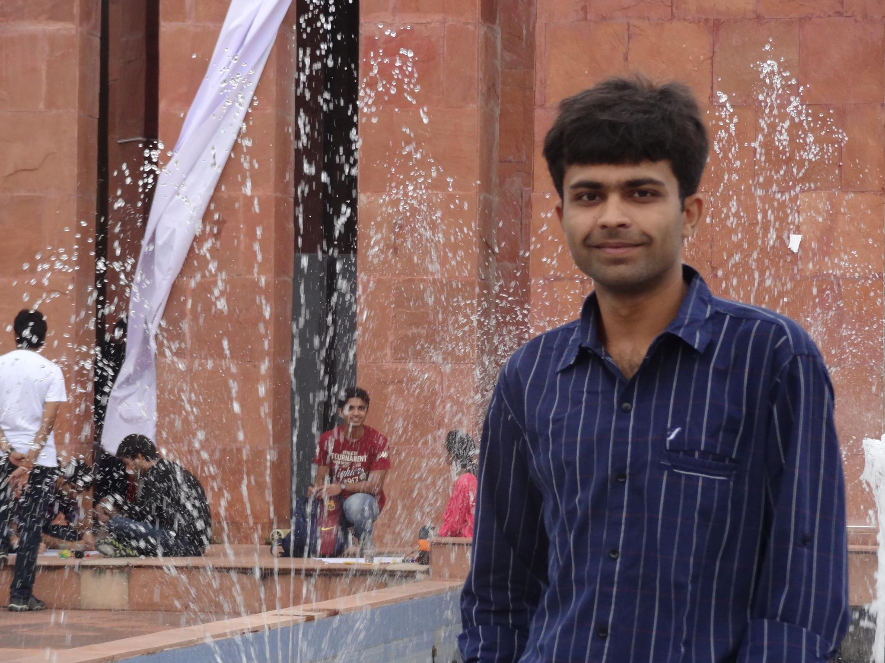

|  |
Abhinash Kumar Jha
Final Year, UG
The LNM Institute of Information Technology, Jaipur
mail id : abhijha.lnm@gmail.com
|
|
Aayush Kumar
Pre-Final Year, UG
The LNM Institute of Information Technology, Jaipur
mail id : aayush.y12@lnmiit.ac.in
|
|  |
Ayush Kumar
Graduate Student
State University of New-York, Korea
mail id : ayush8589@gmail.com
|